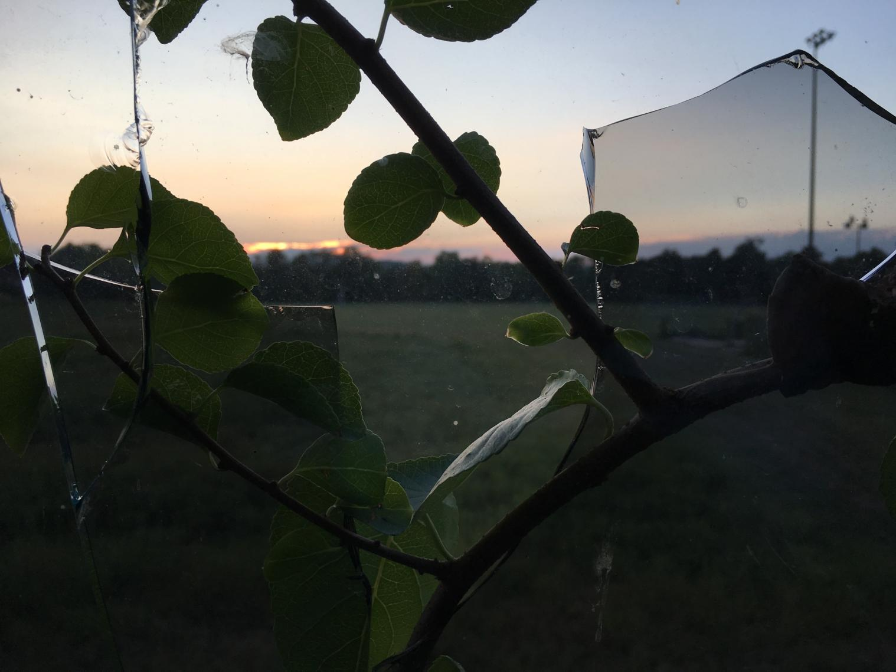
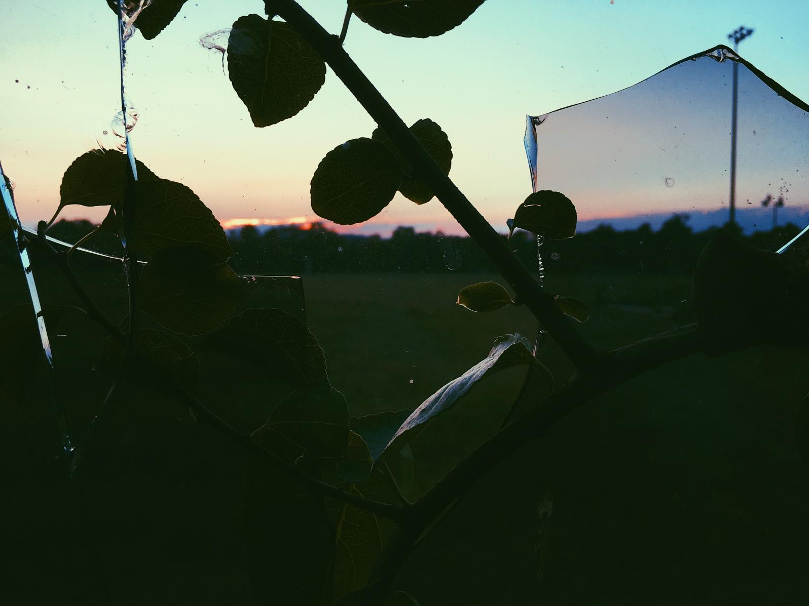
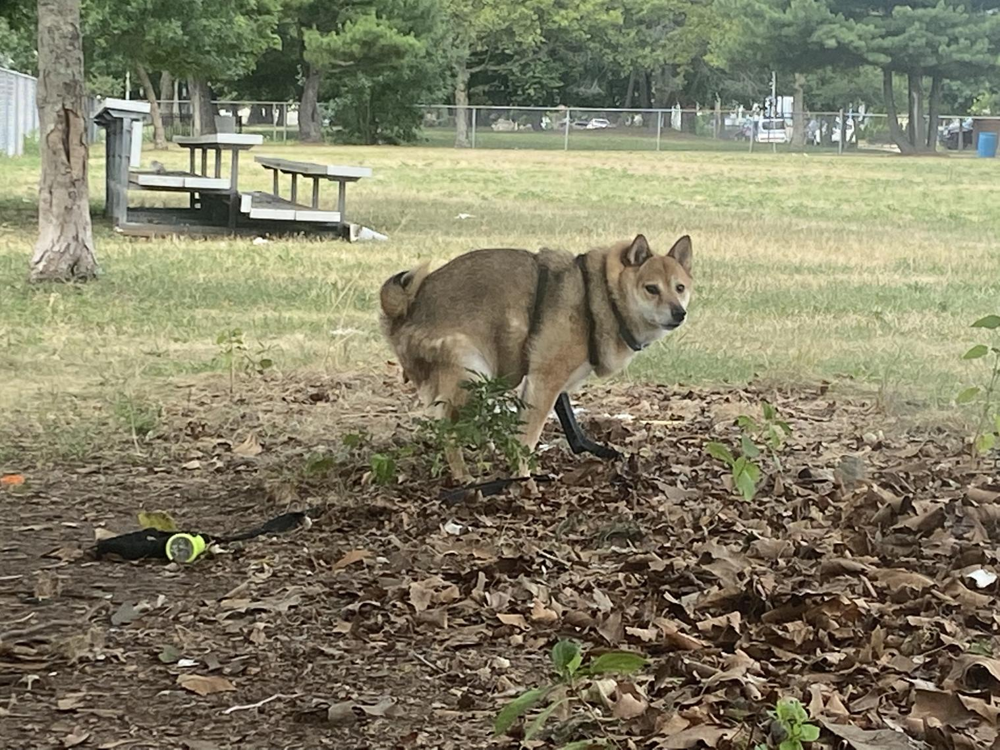
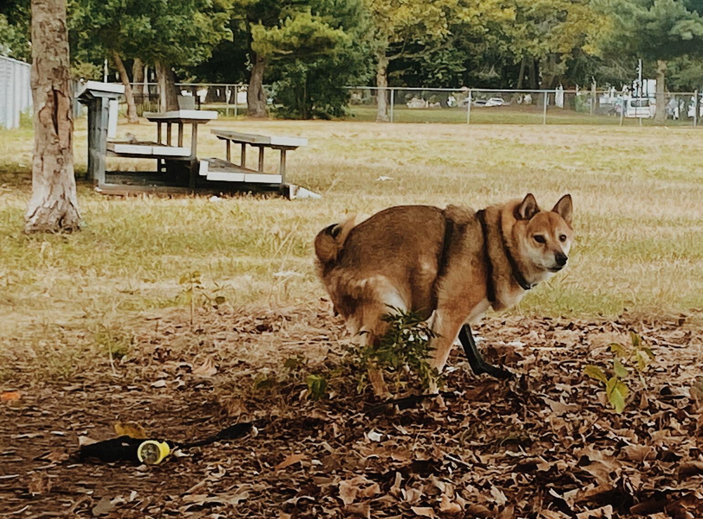
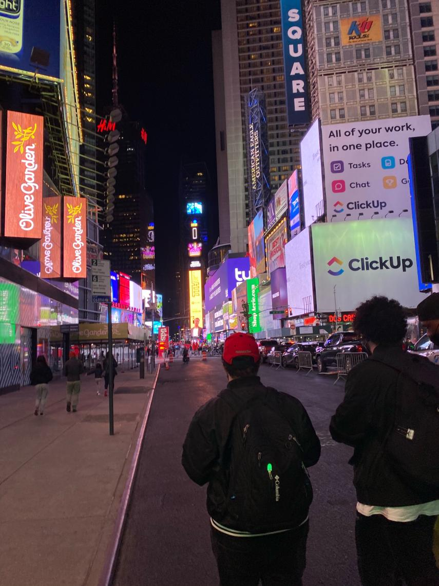
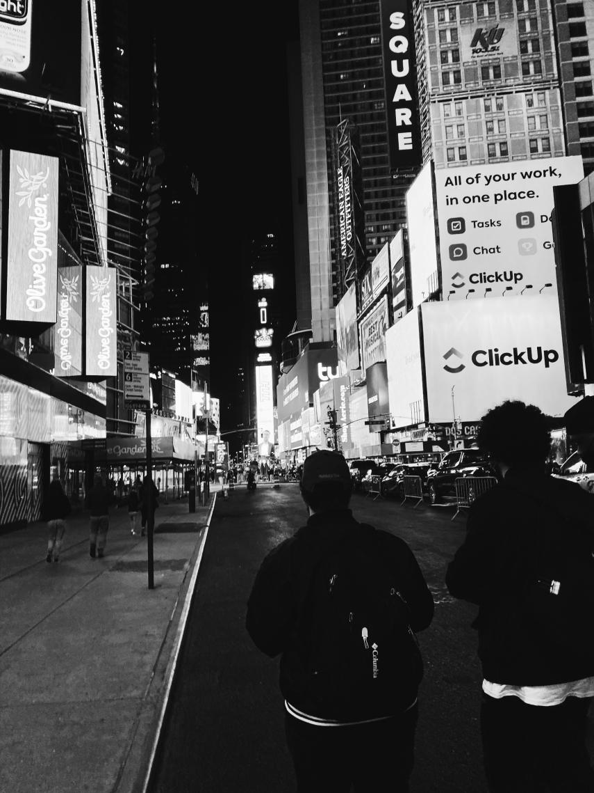

i needed to fill this in for my milestones. its gonna look wonky, yes, i know. just go along with it please.
these are just photos as their original take versus them edited by me because i wanted to. enjoy.
| before | in between | after |
|---|---|---|
|  | exposure: -1.6
contrast: +2.0 sharpen: +4.1 saturation: +3.6 temperature: +1.3 tint: -2.9 |
 |
|  | exposure: -3.1
contrast: +0.8 sharpen: +1.8 saturation: +0.8 temperature: -0.3 tint: -1.2 |
 |
|  | exposure: +1.3 contrast: +3.1 temperature: -3.3 tint: -2.5 |
 |